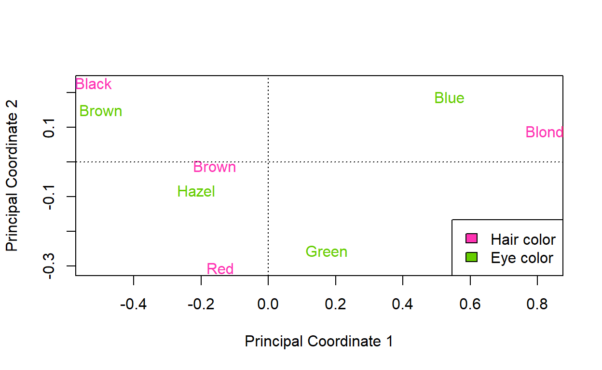

Week 13: Ordination continued & cluster analysis
ANTH 674: Research Design and Analysis in Anthropology
Professor Andrew Du
Introduction
This week, we finished learning about multivariate statistics, which is the study and analysis of multiple variables. We first learned about distance matrices, which are the foundation for many multivariate methods. We learned how distance matrices play a key role in two new ordination methods: principal coordinates analysis and non-metric multidimensional scaling. We then learned how distance matrices can be analyzed using cluster analysis to produce dendrograms, an effective way to visualize how similar data points are in terms of their variables. I finally very briefly covered non-hierarchical clustering techniques (e.g., K-means clustering, discriminant analysis) and multivariate regression (e.g., redundancy analysis). In this tutorial, we will learn how to conduct all these analyses in R, and by doing so, better learn what the methods are doing “underneath the hood”.

My hope is that between the lecture and this tutorial, you will not only know what these methods are used for but also how they work (at least conceptually). As your textbook says (pgs. 427-428), many statistical programs (including R) automate these methods, such that many researchers do not know the assumptions and mechanics of these techniques. This can lead to abuse and misuse of these methods. While these multivariate methods are best learned through the framework of matrix algebra (something I don’t know very well), I have done my best to teach you these techniques conceptually. That is, I have taught you what these methods are used for, when to use them, what is going on “underneath the hood”, and how to interpret the output. After absorbing the lecture and tutorial material, you should have a solid enough foundation to carry out these methods for your own research, or at least have the knowledge base to learn more about these methods on your own.
Goals for this tutorial
1) Continue the never-ending journey of familiarizing yourself with R.
2) Learn what distance matrices are and how to calculate them in R.
3) Learn about principal coordinates analysis and its connection to principal components analysis and correspondence analysis.
4) Learn what non-metric multidimensional scaling is and how to do it in R.
5) Learn how to run a cluster analysis in R.
6) Be exposed to R code for K-means clustering, discriminant analysis, and redundancy analysis.
Distance matrices
Distance matrices are matrices that summarize how (dis)similar observations/variables are when compared in a pairwise fashion. They have \(n\) rows and \(n\) columns (i.e., a square matrix), where \(n\) is the number of analyzed variables. The variable names are the row and column names, and the element at the intersection of one variable (row) and another (column) tells you what the calculated distance is for those two variables (much like interpreting a scatter plot matrix). The diagonals (see figure below) are always zero because those elements are comparing one variable with itself: the variables are identical, so the distance is zero. The off-diagonals are almost always greater than zero, with larger numbers indicating more dissimilar variables. The best way to learn about distance matrices is by example, so let’s do that below.

Euclidean distance
Let’s calculate a distance matrix for the iris dataset.
This is done using the dist() function, where the default
calculated distance is the Euclidean distance. In R,
the variables to be compared in the distance matrix are formatted as
rows, so dist(iris[, -5]) will generate a distance matrix
comparing observations (e.g., individual plants) to each other. In this
case, the more dissimilar two plants’ petal and sepal measurements, the
larger the distance. If we wanted to create a distance matrix comparing
each pair of petal/sepal measurements to each other, we would have to
transpose the dataset first, using t(). This type of
distance matrix will calculate the distance between each pair of
petal/sepal variables according to how (dis)similar each variable’s
measurements on all plants are.

Because the iris measurements are continuous, we can use
Euclidean distances for our distance matrix. Enter
dist(iris[, -5]) below and compare it to
dist(t(iris[, -5])).
# Click "Solution" button if stuckdist(iris[, -5])
dist(t(iris[, -5]))
iris_euc <- dist(iris[, -5])
x <- iris[1, -5]
y <- iris[2, -5]
sqrt(sum((x - y) ^ 2))Let’s work with the first distance matrix, so save it to an object
(e.g., iris_euc). I actually find distance matrices in R
kind of annoying to work with. They should have a set number of rows and
columns (which should be equal), but dim() does not work on
them (they’re more like vectors than matrices in R). head()
returns only the first six elements of the matrix. I find it easier to
visualize distance matrices by transforming them to a matrix class
first, using as.matrix() (distance matrices are
dist class in R). Let’s look at the first five plants in
our distance matrix using as.matrix(iris_euc)[1:5, 1:5]. As
you can see, the diagonals are all zero, and the matrix is symmetrical:
the lower triangle matches the upper triangle. This makes sense as the
distance between Plants 1 and 2 is the same as that between Plants 2 and
1.
Plants 1 and 2 have a Euclidean distance of 0.54. Let’s calculate the Euclidean distance of these two plants “by hand”, and see if we get 0.54. The formula for calculating the Euclidean distance between the \(i\)th and \(j\)th observation is:
\[\begin{align} d_{i, j} = \sqrt{\sum_{k=1}^{n}(y_{i,k} - y_{j,k})^2}, \end{align}\]
where \(y_{i,k}\) is the measurement
for the \(i\)th observation and the
\(k\)th variable, and \(n\) is the total number of variables. In
English, this is basically saying subtract one observation’s variables
from the other, square the differences, sum them up, and take the square
root. See if you can code the Euclidean distance for the first and
second plant in iris (i.e., the first two rows). You can
click the “Solution” button in the above console if you get stuck.
The value you get should be the same exact one in your distance
matrix (iris_euc[1]). We could do this for every pairwise
combination of plants in iris. Or we could just use
dist().
Other distance metrics
As I alluded to earlier, Euclidean distances are best for continuous variables. If at least one variable is not continuous, one has to choose a different distance metric. Some common ones are Jaccard and Sørensen for variables with binary outcomes (e.g., 0s and 1s), chi-square and Bray-Curtis for frequencies of categorical data, and Gower for mixed continuous and categorical data (see pg. 404 in your textbook for more distance metrics, though there are even more than that!).
Let’s calculate a chi-square distance matrix for the
HairEyeColor dataset. This dataset is a contingency table
of the number of individuals with a given hair and eye color, so the
chi-square metric is appropriate here. First enter
haireye <- margin.table(HairEyeColor, 1:2) to add male
and female frequencies together. Enter haireye and see what
comes out.
# Click "Solution" button if stuckhaireye <- margin.table(HairEyeColor, 1:2)
library(analogue)
distance(haireye, method = "chi.distance", dist = TRUE)
distance(t(haireye), method = "chi.distance", dist = TRUE)To calculate a chi-square distance matrix on this contingency table,
we’re going to use the distance() function in the
analogue package. To do this, enter
distance(haireye, method = "chi.distance", dist = TRUE);
the argument dist = TRUE returns a dist class
object. This distance matrix is telling us how similar hair colors are
to each other, in terms of the proportion of individuals with each eye
color. What do you think you’ll get if you transpose the table first?
Test your intuition by trying it out above.
Comparing PCA distance to Euclidean distance of original variables
We are now in a position to see how well the Euclidean distances
between iris variables corresponds to the Euclidean
distances between points in PCA space. First, create a PCA of the four
iris variables, using
iris_pca <- prcomp(iris[, -5]). You can get out the
Euclidean distances between each point in PCA space with
dist(iris_pca$x). Plot these distances against the
Euclidean distances of the original variables from above
(iris_euc). You can do this with
plot(iris_euc, dist(iris_pca$x)). You can add a 1:1 line
with abline(0, 1), where 0 is the intercept and 1 is the
slope. This plot is known as a Shepard diagram.
# Click "Solution" button if stuckiris_pca <- prcomp(iris[, -5])
pca.dist <- dist(iris_pca$x)
iris_euc <- dist(iris[, -5])
plot(pca.dist, iris_euc)
abline(0, 1, col = "red")As you can see, the Euclidean distances between plants in terms of their original variables are preserved exactly in PCA space. This illustrates how PCA is just a rigid rotation of the original data: PCA simply rotates the original data cloud so that the axes of greatest variation align with the PCs (making sure that the PCs are perpendicular and independent to each other). Euclidean distances will be identical only if all PCs are considered. If the data are scaled first, then PCA will preserve the Euclidean distance between the scaled versions of the variables.
Principal coordinates analysis
I introduced ordination to you using PCA, which is sensible since it’s by far the most common ordination method used by anthropologists. As a reminder, the main goals of ordination are (from your lecture):
- Distill multivariate data into fewer variables/dimensions for plotting or analytical purposes.
- Maintain as best as possible the distances between the original observations.
- Create new variables/axes, where the first one is fit through the axis of greatest variation in the multivariate data cloud, the second one is fit through the axis of greatest residual variation left over from the first axis, etc.
- Create new variables/axes that are perpendicular and independent to each other.
PCA does all this, as does principal coordinates analysis (PCoA), which is also known as metric multidimensional scaling. I like to think of PCoA as the generalized, “jack-of-all-trades” ordination method. That is, PCoA is an ordination method that carries out singular value decomposition (SVD) on any distance matrix in order to reduce the data into fewer important variables. So, PCA can be considered a specialized form of PCoA, which is done on a Euclidean distance matrix. Likewise, correspondence analysis (to be covered later) is a specialized form of PCoA done on a chi-square distance matrix.
PCoA is slightly different from PCA, however, in that it does SVD on a distance matrix, not the variance-covariance matrix of the variables. Analyzing the variance-covariance matrix, which quantifies how variables are correlated, is how PCA distills correlated variables into PCs. Instead, PCoA uses a distance matrix, which tells us how similar two observations are, to plot observations in PCoA space where closer points indicate that they are more similar in terms of their variables. This also means that PCoA does not distill variables into PCs and therefore does not compute loadings.
Comparing PCA & PCoA
Let’s calculate a PCoA using a Euclidean distance matrix to
illustrate that this is identical to PCA. We will analyze the
iris dataset again. First fit a PCA
(iris_pca <- prcomp(iris[, -5])) and create a PCA
scatter plot (plot(iris_pca$x[, 1:2])). You can color-code
the points by species if you’d like.
# Click "Solution" button if stuckiris_pca <- prcomp(iris[, -5])
plot(iris_pca$x[, 1:2], type = "n")
points(iris_pca$x[iris$Species == "setosa", 1:2])
points(iris_pca$x[iris$Species == "versicolor", 1:2], col = "red")
points(iris_pca$x[iris$Species == "virginica", 1:2], col = "blue")
iris_euc <- dist(iris[, -5])
iris_pcoa <- cmdscale(iris_euc, k = 2, eig = TRUE)
iris_pcoa$points[, 2] <- -1 * iris_pcoa$points[, 2]
plot(iris_pcoa$points, type = "n")
points(iris_pcoa$points[iris$Species == "setosa",])
points(iris_pcoa$points[iris$Species == "versicolor",], col = "red")
points(iris_pcoa$points[iris$Species == "virginica",], col = "blue")
iris_pcoa1 <- cmdscale(iris_euc, k = nrow(iris) - 1, eig = TRUE)
plot(iris_euc, dist(iris_pcoa1$points))
abline(0, 1, col = "red")To fit a PCoA to a Euclidean distance matrix, we need to first
generate the matrix. This can be done using code from the previous
topic: iris_euc <- dist(iris[, -5]). Now we use the
function cmdscale() to carry out the PCoA analysis. This is
done with
iris_pcoa <- cmdscale(iris_euc, k = 2, eig = TRUE).
k = 2 tells us that we only want the first two axes (i.e.,
principal coordinates), and eig = TRUE
tells R to return the eigenvalues. Go ahead and create the PCoA plot
with plot(iris_pcoa$points).
You’ll notice that the axes in your PCoA might be flipped (my y-axis
is flipped). Remember that the signs of PC or principal coordinate
scores are arbitrary; what matters is that they’re internally consistent
(see the Eigenvectors topic in the Week 11 tutorial). This
happens because signs depend on an arbitrary decision made during SVD.
To fix my flipped y-axis, I simply multiplied all principal coordinate 2
scores by -1:
iris_pcoa$points[, 2] <- -1 * iris_pcoa$points[, 2]. Now
the PCA and PCoA plots are identical. And because they’re identical, I
know a Shepard diagram of the PCoA points will perfectly preserve the
Euclidean distances in original iris variable space (you
can confirm this if you’d like, but you have to first change the
cmdscale() argument to k = nrow(iris) - 1, the
maximum number of principal coordinates allowed with 150 data
points).
My advice is if you want to do an ordination on continuous variables, use PCA over PCoA, since the former gives you loadings, which are very informative.
PCoA eigenvalues
To get out percent variance explained by each principal coordinate,
we need to get out the eigenvalues. This is done with
iris_pcoa$eig. Divide each eigenvalue by the total and
multiply by 100 to get percent variance explained by each principal
coordinate. Try this out below (you can also create a scree plot if you
want!).
# Click "Solution" button if stuckiris_euc <- dist(iris[, -5])
iris_pcoa <- cmdscale(iris_euc, k = 2, eig = TRUE)
barplot(iris_pcoa$eig / sum(iris_pcoa$eig) * 100)
iris_pca <- prcomp(iris[, -5])
iris_pca$sdev ^ 2
iris_pcoa$eig / (nrow(iris) - 1)You might notice that the eigenvalues of PCA
(iris_pca$sdev ^ 2) are not the same as those from PCoA. In
fact, the PCoA eigenvalues are larger by a factor of \(n-1\) (where \(n\) is the number of observations) because
it does SVD on a distance matrix, as opposed to a variance-covariance
matrix. So to get the PCA eigenvalues, just divide the PCoA eigenvalues
by \(n-1\) (149 for the
iris dataset). This difference in eigenvalues does not
affect the calculation for percent variance explained, however.
For those who are curious what the eigenvectors are in PCoA, those
are actually the PCoA scores themselves (i.e.,
iris_pcoa$points, or the coordinates of the points in PCoA
space). This is different than PCA, where the eigenvectors are the
loadings.
Correspondence analysis
Correspondence analysis (CA) is an ordination done on chi-square distance matrices (with one extra detail, which I’ll cover below). Thus, it is used to ordinate frequencies of categorical data (e.g., number of individuals within species across sites). We will learn CA by first performing PCoA on a chi-square distance matrix.
PCoA on chi-square distance matrix
The dataset we will analyze for this section is the
HairEyeColor dataset from before. Again, combine males and
females using
haireye <- margin.table(HairEyeColor, 1:2). Calculate a
chi-square distance matrix using the same code as before:
hair_chi <- distance(haireye, method = "chi.distance", dist = TRUE).
I used this object name because the table rows are hair color, so that’s
the variable being compared in the distance matrix. Run the PCoA
analysis with
hair_pcoa <- cmdscale(hair_chi, k = nrow(haireye) - 1, eig = TRUE).
We are now extracting three principal coordinates with
k = nrow(haireye) - 1, the maximum allowed given that there
are only four rows (for \(n\) rows, you
can get only \(n-1\) principal
coordinates).
Create the PCoA plot. In lecture, I used text() instead
of points() to add the hair color names to the plot. Look
at the help file to see if you can figure out how to do this on your own
(click the “Solution” button if you get stuck). You can also calculate
percent variance explained by each principal coordinate (which I didn’t
code) by analyzing the eigenvalues (like you did in the previous topic):
hair_pcoa$eig / sum(hair_pcoa$eig) * 100.
# Click the "Solution" button if stuckhaireye <- margin.table(HairEyeColor, 1:2)
# hair color
hair_chi <- distance(haireye, method = "chi.distance", dist = TRUE)
hair_pcoa <- cmdscale(hair_chi, k = nrow(haireye) - 1, eig = TRUE)
plot(hair_pcoa$points[, 1:2], type = "n", xlab = "Principal Coordinate 1", ylab = "Principal Coordinate 2") # adjust the axes if names are cut off
text(hair_pcoa$points[, 1:2], rownames(hair_pcoa$points))
abline(h = 0, lty = 3) # x-axis
abline(v = 0, lty = 3) # y-axis
hair_pcoa$eig / sum(hair_pcoa$eig) * 100
mosaic(haireye, shade = TRUE, legend = TRUE)
# eye color
eye_chi <- distance(t(haireye), method = "chi.distance", dist = TRUE)
eye_pcoa <- cmdscale(eye_chi, k = nrow(t(haireye)) - 1, eig = TRUE)
plot(eye_pcoa$points[, 1:2], type = "n", xlab = "Principal Coordinate 1", ylab = "Principal Coordinate 2") # adjust the axes if names are cut off
text(eye_pcoa$points[, 1:2], rownames(eye_pcoa$points))
abline(h = 0, lty = 3) # x-axis
abline(v = 0, lty = 3) # y-axis
# hair and eye color
plot(hair_pcoa$points[, 1:2], type = "n", xlim = range(hair_pcoa$points[, 1], eye_pcoa$points[, 1]), ylim = range(hair_pcoa$points[, 2], eye_pcoa$points[, 2]), xlab = "Principal Coordinate 1", ylab = "Principal Coordinate 2") # adjust the axes if names are cut off# adjust the axes if names are cut off
eye_pcoa$points[, 1] <- -1 * eye_pcoa$points[, 1] # flip x-axis
text(hair_pcoa$points[, 1:2], rownames(hair_pcoa$points), col = "maroon1")
text(eye_pcoa$points[, 1:2], rownames(eye_pcoa$points), col = "chartreuse3")
abline(h = 0, lty = 3) # x-axis
abline(v = 0, lty = 3) # y-axis
legend("bottomright", legend = c("Hair color", "Eye color"), fill = c("maroon1", "chartreuse3"))Points that are closer are more similar in terms of proportion of
individuals with certain eye colors. The PCoA plot is more interpretable
if you can visualize those proportions. Do this using
mosaic(haireye, shade = TRUE, legend = TRUE). I discuss in
more detail how to interpret a PCoA plot below, when we plot both hair
and eye color on the same plot.
We could also create a PCoA plot of eye color by computing a
chi-square distance matrix on the transposed version of our
haireye table (so eye color is now on the rows). Try this
out above (click the “Solution” button if you get stuck).
One of the nice things about doing PCoA on both hair and eye color is
that we can plot both on the same PCoA plot (you could’ve plotted
iris petal/sepal measurements on the PCoA plot from the
previous topic). To do this, we first have to see if any of our axes are
flipped (remember, this happens because of an arbitrary decision made
during SVD). Only do this if you know how your two variables are
related to each other (e.g., as discerned from a mosaic plot);
CA, which I cover below, does this automatically. In my case, I know
blond hair and blue eyes are strongly associated, so my x-axis is
flipped. Again, I fix this with
eye_pcoa$points[, 1] <- -1 * eye_pcoa$points[, 1]. Now,
I can place hair and eye color on the same plot. See if you can do this
on your own (click the “Solution” button if you get stuck). You should
get something that looks like the plot below.

Now I will go over how to interpret the PCoA plot with both hair and eye color on it. We see that black hair and brown eyes are plotted together far from the origin (where the dashed lines intersect). In fact, one can imagine drawing an arrow from the origin to each of these points, and the arrows are pretty much parallel. The fact that the arrows are parallel and far from the origin means black hair and brown eyes are strongly positively associated with each other (as can be seen from the mosaic plot). You can interpret these imaginary arrows in the same way that you interpreted PC loadings from last week. This interpretation of black hair and brown eyes also applies to blond hair and blue eyes, which are plotted close together on the right side of the plot. Thus, black hair and brown eyes are on the opposite end of Principal Coordinate 1, which explains the most variation in the data, relative to blond hair and blue eyes. This means that if you have black hair, you’re unlikely to have blue eyes, and the same is true for blond hair and brown eyes. Using the same logic, we can see that red hair and green eyes are positively associated with each other. Lastly, how strongly associated hair and eye color are is a function of how close pairs of points are from the origin. So while brown hair and hazel eyes are plotted together, these points are close to the origin, so there is a weak positive association between the two.
Correspondence analysis
I introduced CA using PCoA because you are somewhat familiar with PCoA now and also to emphasize how all these ordination methods are related. That is, CA is pretty much just PCoA done on a chi-square distance matrix. The one additional difference in CA is that it up-weights cells in the table with larger sample sizes. This helps ameliorate the effect of smaller sample sizes, which have larger sampling errors and may be outliers. So, a CA is identical to a weighted PCoA.
A weighted PCoA is done in R using the wcmdscale()
function in the vegan package. Let’s do this on a new
dataset, mite, which has more data points, so you can see
how a weighted PCoA is identical to CA. Load the mite
dataset using data(mite) (it’s from the vegan
package), and look at the help file for details about this dataset.
First, create a chi-square distance matrix of the dataset using
mite_chi <- distance(mite, method = "chi.distance", dist = TRUE).
Soil cores (think of them like sites) are rows, so this is what is being
compared. Soil cores with smaller distances will be more similar in
terms of their mite species composition and abundances. Now run the
weighted PCoA on the distance matrix with
mite_wpcoa <- wcmdscale(mite_chi, k = nrow(mite) - 1, eig = TRUE, w = rowSums(mite) / sum(mite)),
where the w = rowSums(mite) / sum(mite) argument tells us
to weigh soil cores by the abundance of mite individuals in each core
relative to the number of all mite individuals in the dataset. Now
create the plot of soil cores with
plot(mite_wpcoa$points[, 1:2]).
# Click "Solution" button if stuckdata(mite)
mite_chi <- distance(mite, method = "chi.distance", dist = TRUE)
mite_wpcoa <- wcmdscale(mite_chi, k = nrow(mite) - 1, eig = TRUE, w = rowSums(mite) / sum(mite))
plot(mite_wpcoa$points[, 1:2])
mite_ca <- ca(mite)
plot(mite_ca)
mite_wpcoa$eig
mite_ca$sv ^ 2
plot(mite_chi, dist(mite_wpcoa$points))
abline(0, 1, col = "red")We can also just do CA directly using the ca() function
in the ca package. Enter
mite_ca <- ca(mite) and then plot(mite_ca).
You can see that both soil cores (blue circles) and mite species (red
triangles) are automatically plotted, and percent variance explained is
automatically calculated and added to the plot. To get out the
eigenvalues yourself, enter mite_ca$sv ^ 2.
You can also see that the array of soil core points from the weighted
PCoA is identical to that from the CA (though my y-axis in weighted PCoA
is flipped). Moreover, the eigenvalues are identical (compare
mite_wpcoa$eig and mite_ca$sv ^ 2). Again, a
CA is identical to a weighted PCoA!
Lastly, let’s create a Shepard diagram with
plot(mite_chi, dist(mite_wpcoa$points)). As you can see, an
ordination done on a chi-square distance matrix perfectly
preserves the original distances in the matrix!
My advice is that if you want to ordinate frequencies of categorical data, just do CA over a weighted PCoA. The former will automatically align both variables for you instead of having to do it manually (like we did for hair and eye color).
If you’re interested in more details about what CA is doing underneath the hood, including calculating the chi-square distance matrix “by hand” and doing SVD on it, this website does a really good job explaining all those details.
Non-metric multidimensional scaling
Most ordination techniques do a rigid rotation of multivariate data and create many new axes fit to the axes of greatest variation in the dataset. The downside to this is that you can only ever plot two or three axes at a time, so you’re only getting a partial picture of the multivariate dataset (albeit an accurate one if the first two axes explain most of the variation in the dataset).
Non-metric multidimensional scaling (NMDS), on the other hand, will take a multivariate dataset and “squish” it into two or three dimensions. It does this by leveraging computing power to try many different layouts of points in, for example, two-dimensional space until the Euclidean distances between points best correspond with the distances in the original distance matrix. Because of the computing power involved, NMDS is a relatively new ordination technique. Also, because NMDS uses this iteration technique, it does not perform SVD on a distance matrix, so the axes are not fit through the axes of greatest variation and there is no percent variance explained by the axes. How the points are related to axes in NMDS is completely arbitrary; all that matters is how close points are to each other. Lastly, as with PCoA, NMDS can be done on any distance matrix.
To do an NMDS in R, we will use the isoMDS() function
from the MASS package. We will use our haireye
dataset from before
(haireye <- margin.table(HairEyeColor, 1:2)). Enter
nmds <- isoMDS(hair_chi, k = 2), where
hair_chi is our chi-square distance matrix (i.e.,
hair_chi <- distance(haireye, method = "chi.distance", dist = TRUE))
and k = 2 means we want NMDS to squish our multivariate
data into two dimensions. Enter plot(nmds$points) to plot
the data. Use text() to add hair color labels to the
plot.
# Click "Solution" button if stucklibrary(MASS)
haireye <- margin.table(HairEyeColor, 1:2)
hair_chi <- distance(haireye, method = "chi.distance", dist = TRUE)
nmds <- isoMDS(hair_chi, k = 2)
plot(nmds$points, type = "n")
text(nmds$points, rownames(haireye))
nmds$stress
plot(hair_chi, dist(nmds$points))
abline(0, 1)As you can see, black hair is far away from blond, as to be expected
given how different their proportion of eye colors are (again, enter
mosaic(haireye, shade = TRUE, legend = TRUE) to visualize
this). Black and red hair are each close to brown hair because these
pairs of hair colors have the most similar proportion of eye colors.
nmds$stress gives us a measure of
stress, which is how much the Euclidean distances
between points in NMDS space don’t correspond with the
chi-square distances in the original distance matrix. Stress is what is
minimized during the NMDS iteration process. isoMDS()
returns stress as a percentage, though its typically reported as a
proportion, so divide stress by 100. A lower stress is preferred, where
any number below 0.2 is acceptable (general rule). The stress of our
NMDS analysis is pretty much zero indicating that there’s a near perfect
correlation between the Euclidean distances of NMDS points and the
chi-square distances. We can see this with a Shepard plot:
plot(hair_chi, dist(nmds$points)). The reason the Shepard
plot here is so good is because isoMDS() automatically uses
a PCoA on the distance matrix to get the starting configuration for NMDS
(i.e., NMDS starts with the location of points from a PCoA and then
continually adjusts them until stress is minimized). So this NMDS looks
exactly like your earlier PCoA plot because that’s the optimal
configuration! For your lecture, I chose a random starting
configuration, hence why the scatter plot and Shepard diagram look
different.
As with PCoA, you could also plot an NMDS for eye color, but you cannot add those points to the hair color plot. Again, that’s because the points are arbitrarily aligned with the axes, so it’s difficult to get hair and eye color points aligned in the same direction.
Cluster analysis
Recall that ordination visualizes multivariate data in a reduced dimensional space. Points that are closer in this space are more similar in terms of their variables. Cluster analysis, on the other hand, visualizes similarities between observations by joining similar data points into clusters. The most popular clustering methods are hierarchical, where more similar data points are united in smaller clusters, and the next most similar data points are then added to those smaller clusters to form larger clusters. This is visualized using a dendrogram. As with PCoA and NMDS, cluster analysis can be done using any distance matrix.
There are two main kinds of clustering algorithms: agglomerative clustering and divisive clustering. The former starts with separate observations as individual clusters and successively joins them based on the similarities of their variables, while the latter starts with one large cluster of all observations and splits the data into smaller clusters until each observation is its own cluster. Agglomerative clustering is more popular than divisive clustering.

Agglomerative clustering
Let’s perform agglomerative clustering on our haireye
table from before
(haireye <- margin.table(HairEyeColor, 1:2)). Create the
chi-square distance matrix using
hair_chi <- distance(haireye, method = "chi.distance", dist = TRUE).
To do agglomerative clustering in R, we use the hclust()
function. Enter
hair_agg_clust <- hclust(hair_chi, method = "average").
The method = "average" argument means we’re using the
UPGMA (unweighted pair group method with arithmetic
mean) algorithm, which is the most common in anthropology.
Enter plot(hair_agg_clust) to see the dendrogram.
# Click "Solution" button if stuckhaireye <- margin.table(HairEyeColor, 1:2)
hair_chi <- distance(haireye, method = "chi.distance", dist = TRUE)
hair_agg_clust <- hclust(hair_chi, method = "average")
plot(hair_agg_clust, ylab = "Chi-square distance", hang = -1)
hair_agg_clust$height[1]
hair_chiWe can make our dendrogram more visually appealing. First, we can
make the y-axis label more accurate by labeling it as “Chi-square
distance” (do this using the traditional ylab = argument).
I also like setting argument hang = -1. This places the
labels on the same level at y = 0.
Based on the resulting dendrogram, we can see that red- and brown-haired individuals are most similar in terms of the eye color proportions in each. The next most similar to these two is black hair, while blond hair is the most different from the other three. This confirms what we saw in our earlier ordination plots.
To interpret the y-axis (“Chi-square distance”), let’s look at the
distance associated with where “Brown” and “Red” are joined
(hair_agg_clust$height[1]). Note that this is the exact
same chi-square distance separating brown and red hair in our distance
matrix (enter hair_chi). So the y-axis tells us the
chi-square distance between individual data points and between
individual data points and clusters.
Divisive clustering
This is done using the diana() function from the
cluster package. Enter
hair_div_clust <- diana(hair_chi). Then enter
plot(hair_div_clust, hang = -1, ylab = "Chi-square distance").
This code returns two plots; if we only want the second plot with the
dendrogram, add which.plots = 2 to the plot()
function.
# Click "Solution" button if stuckhaireye <- margin.table(HairEyeColor, 1:2)
hair_chi <- distance(haireye, method = "chi.distance", dist = TRUE)
hair_div_clust <- diana(hair_chi)
plot(hair_div_clust, hang = -1, ylab = "Chi-square distance")This dendrogram is very similar to the one produced by agglomerative clustering. There are some subtle differences with the chi-square distances at which higher clusters are joined. This is due to differences between the agglomerative and divisive clustering algorithms in terms of how higher clusters should be joined. The largest difference is that blond hair is on the right side of the plot in the divisive clustering dendrogram. This difference is purely aesthetic, however, as dendrograms can be thought of as mobiles: you can rotate clusters around the stem, and the results are identical.

Exercise 1
We will analyze the
mtcarsdataset for this question. First subset out the continuous variables:mpg,disp,hp,drat,wt, andqsec. Create a distance matrix for these variables with car models as rows (i.e., don’t transpose the dataset). Which distance metric should you use? Create a PCoA plot of your distance matrix, where points are replaced with car model labels. Include the percentage of variance explained in the axis labels. Which car model is most similar to the Duster 360?For this question, we are going to analyze a new dataset:
dunefrom theveganpackage. Load the dataset usingdata(dune). Look at the help file for details about this dataset. We are going to use a new distance metric for our distance matrix: Bray-Curtis. So, setmethod = "bray"in thedistance()function (we are going to plot sites, which are already formatted as rows). Create a two-dimensional NMDS plot of the sites. What is the stress from the NMDS analysis?Perform a UPGMA cluster analysis on the distance matrix from Question 1. Produce a dendrogram of the results. Did the car model you picked in Question 1 match what you see in the dendrogram?
# Click "Solution" button when done# Q1
mtcars1 <- subset(mtcars, select = c(mpg, disp, hp, drat, wt, qsec))
# Euclidean distance
mtcars_euc <- dist(mtcars1)
mtcars_pcoa <- cmdscale(mtcars_euc, k = nrow(mtcars) - 1, eig = TRUE)
perc_var <- mtcars_pcoa$eig / sum(mtcars_pcoa$eig) * 100
plot(mtcars_pcoa$points[, 1:2], type = "n", xlab = paste0("Principal Coordinate 1 (", round(perc_var[1]), "%)"), ylab = paste0("Principal Coordinate 2 (", round(perc_var[2]), "%)"))
text(mtcars_pcoa$points, rownames(mtcars_pcoa$points), cex = 0.75)
# Camaro Z28
# Q2
library(vegan)
data(dune)
dune_bray <- distance(dune, method = "bray", dist = TRUE)
dune_nmds <- isoMDS(dune_bray, k = 2)
plot(dune_nmds$points)
dune_nmds$stress / 100 # 0.12 which is OK
# Q3
mtcars_upgma <- hclust(mtcars_euc, method = "average")
plot(mtcars_upgma, hang = -1, ylab = "Euclidean distance")R code for other methods
I briefly covered K-means clustering, discriminant analysis, and redundancy analysis in class. Therefore, I won’t go over how to use these in R and how to interpret the outputs. Instead, I’ll provide the functions used for these methods and leave it to you to study them more if they’re relevant for your research.
K-means clustering is done using the kmeans()
function, discriminant analysis uses the lda() function in
the MASS package, and redundancy analysis uses the
rda() function in the vegan package.
Conclusion
This week’s lecture and tutorial concluded your education on multivariate methods. This week, we learned about new ordination methods, such as PCoA, CA, and NMDS. We also learned about cluster analysis, another multivariate exploratory method used to visualize which data points are more similar based on their variables. I didn’t really cover K-means clustering, discriminant analysis, or redundancy analysis in this tutorial and only provided you with the R functions for running these analyses.
What I want to emphasize, and what has been the dominant theme of my class, is how similar and unified all these different methods are. For ordination, the unifying method is PCoA, of which PCA and CA are specialized versions. That is, PCA can be thought of as a PCoA done on a Euclidean distance matrix, and CA can be thought of as a PCoA done on a chi-square distance matrix. NMDS is the outlier ordination method, as it doesn’t use SVD and instead “brute force” searches for the optimal configuration of points in a reduced number of dimensions (e.g., two or three).
Ordination and cluster analysis are unified by the fact that they both analyze distance matrices, so these two methods analyze identical inputs but display the results in different fashions. Ordination plots multivariate data in a reduced dimensional space, with closer points reflecting observations with more similar variables. In this way, ordination can be thought of as displaying similarities between observations on a continuous scale. Cluster analysis, on the other hand, places data points in clusters, so it portrays similarities between observations in a discrete fashion. These two methods are just different ways of visualizing distance matrices; whichever one is more appropriate is dictated by your research question.
So, instead of approaching these methods individually and becoming overwhelmed, remember how they’re all unified and that’ll greatly simplify how much you have to learn/remember; this will in turn facilitate your comprehension of these methods. (Recall that I adopted the same strategy when teaching you linear models). By teaching you multivariate methods in this way, I have hopefully maximized your understanding of these techniques, which will enable you to use them in your own research.